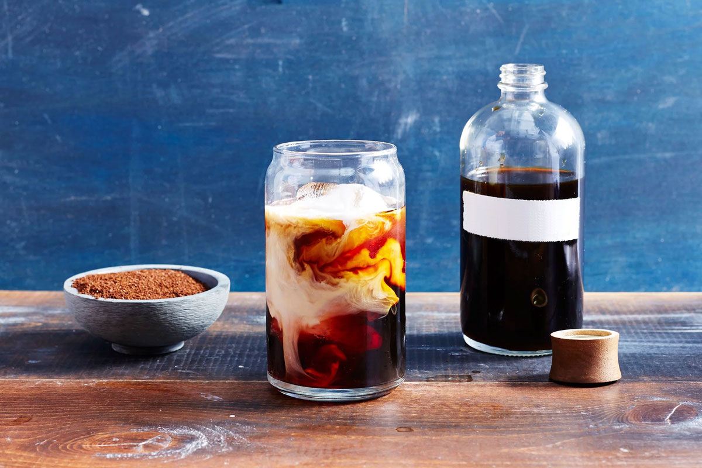

We turn the best coffees of the world into delicious tastes for you.
The coffee plant is native to Ethiopia. According to legend coffee was discovered by an Ethiopian goat herd called Kaldi. He noticed that goats who ate certain beans became very lively. Coffee was drunk in Yemen by the 15th century. By the 16th century, coffee had spread to Persia (Iran) and Turkey. There were many coffee houses where people could drink and also socialize.
Instant coffee was invented by New Zealander David Strang in 1889. Freeze dried coffee was invented in 1938. Meanwhile decaffeinated coffee was invented by Ludwig Roselius in 1903. Melitta Bentz invented the coffee filter in 1908. Achille Gaggia invented the modern espresso machine in 1946. The first pump driven espresso machine was made in 1960. Meanwhile in the early 20th century the coffee table became a popular item of furniture.

Cold brewed coffee can be served iced or piping hot, dealer’s choice. You follow the same method for making the coffee either way, and then either serve it over ice or warm it up in the microwave for a hot cup. When warming it for hot coffee, I often add a splash of water to dilute the coffee before warming. But this, again, is a matter of personal taste.